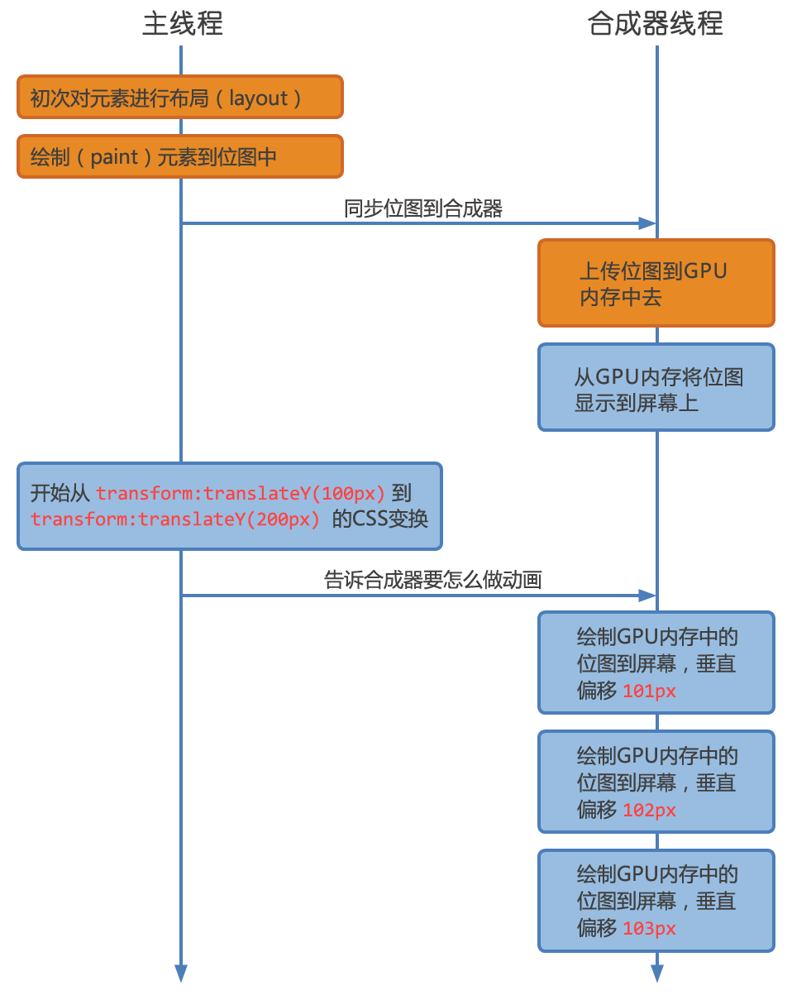
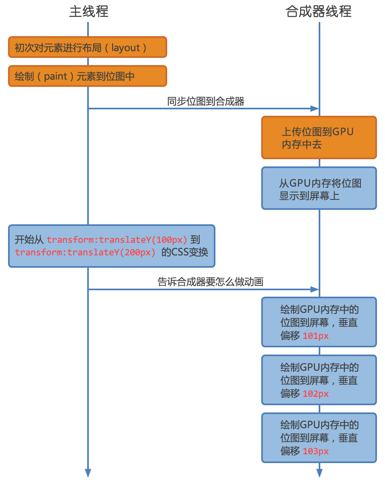

高性能动画
前端工程师 李梦龙
2016年
如何实现动画
JavaScript
HTML5
CSS3
JavaScript
setInterval
setTimeout
HTML5
requestAnimationFrame(callback)
CSS3
animation
transition
timer问题
依靠浏览器内置时钟更新频率. eg. IE8及以前更新间隔为15.6, setTimeout 16.7, 它需要两个15.6ms才触发。超过14.5ms(时机)
GPU渲染画面的频率和屏幕刷新频率的不一致导致丢帧(成本)
raf问题
需要考虑渲染成本
callback工作太多，自动调节GPU渲染画面的频率
css3问题
需要考虑渲染成本
渲染过程

触发Layout(计算布局)
改变width, height, margin等和大小、位置相关的属性
读取size, position相关得属性
clientHeight, clientLeft, clientTop, clientWidth, focus(), innerText, offsetHeight, offsetLeft, offsetParent, offsetTop, offsetWidth, scrollLeft, scrollTop, scrollWidth .....
Layout(计算布局)
var h1 = element1.clientHeight;
element1.style.height = (h1 * 2) + 'px';
var h2 = element2.clientHeight;
element2.style.height = (h2 * 2) + 'px';
//先读
var h1 = element1.clientHeight;
var h2 = element2.clientHeight;
//后写
element1.style.height = (h1 * 2) + 'px';
element2.style.height = (h2 * 2) + 'px';
Paint(绘制)
触发:改变border-radius, box-shadow, color等展示相关的属性
代价:不断重新绘制，性能降低
Demo优化:简化绘制的复杂度，避免不必要的绘制，减少绘制区域
Layer(模型)
浏览器根据CSS属性为元素生成Layers
Layers上传到GPU
当改变Layer的transform, opacity属性时，渲染会跳过Layout, paint，直接通知GPU对Layer做变换
Layer创建标准
拥有3d transform属性
使用animation, transition实现opacity, transform的动画
动画对比(top/transform)
 

节省的时间
CPU进行Layout, Paint的时间
CPU向GPU传输位图的时间
高性能动画
animation/transition
改变位移，缩放等高级属性
GPU硬件加速